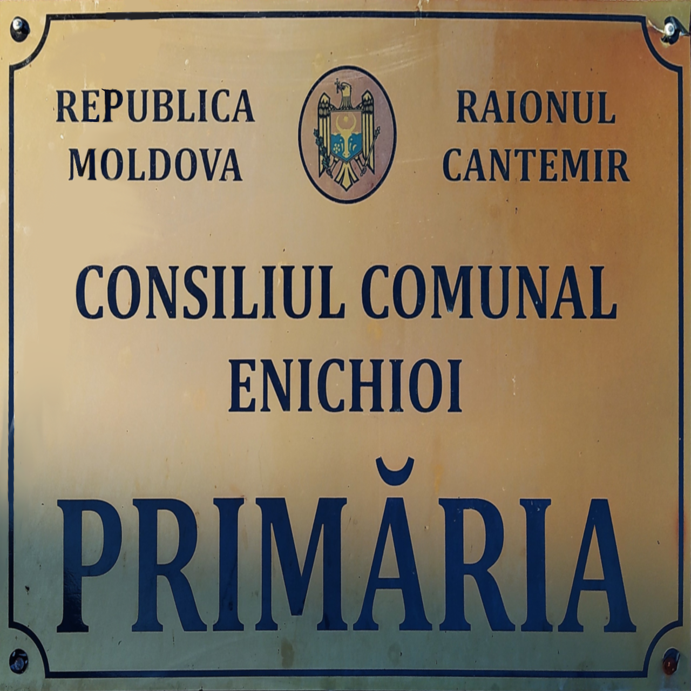
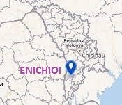
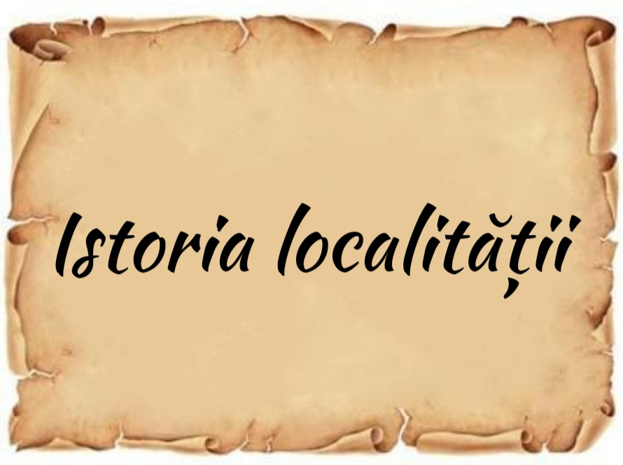

Info Primăria Enichioi
Date generale
Satul Enichioi a fost atestat pentru prima dată în 1770. Este una din localitățile cu populație românească, fondate pe locul câșlelor tătărești. De aici și denumirea de turcică Enichioi. Satul Enichioi e situat pe Valea Enichioiului, la 37 km sud-est de orașul Cantemir şi la 162 km de Chişinău. Se învecinează cu localităţile Baimaclia, Tartaul, Crăciun, Acui, Cîrpeşti, Şamalia. Comuna are în componența sa localitățile Boboica, Floricica și Țolica. Populația localității Enichioi este de 2018 locuitori, dintre care 982 bărbați, 1036 femei. Populaţia prezentă este de 1750, iar 268 de locuitori sunt plecați peste hotare. Suprafața teritoriului este de 34,8 km2. Pe teritoriul localității sunt amplasate mai multe instituții: gimnaziu, punct medical, casă de cultură, oficiu poștal, biserica sfântul Ierarh Nicolae.
Legenda localității
Din moși strămoși, transmisă pe cale orală de-a lungul timpului, legenda satului Enichioi relatează următoarele. La început pe aceste locuri nu locuia nimeni. În apropiere existau așezări omenești. Conform legendei, doi tineri din acele așezări vecine, pe nume Eni și Chia s-au îndrăgostit. Eni provenea dintr-o familie bogată, iar Chia dintr-o familie săracă. Se iubeau atât de mult, încât au hotărât să se căsătorească. Familia tânărului n-a acceptat această căsătorie, vrând să-i despartă. Tinerii au decis să meargă pe calea vieții împreună, de aceea au părăsit casa părintească, stabilindu-se cu traiul, întemeind o mică gospodărie, pe teritoriul actualului sat Enichioi. Cu timpul numărul gospodăriilor din această localitate a crescut, iar așezării i s-a dat denumirea de Enichioi, după numele primilor locuitori a acestui ținut.
Din istorie
 1773 – Prima mențiune a localității Enichioi într-un documentar.
1800 – A fost zidită biserica cu hramul Sfântul Nicolaie, clasată drept monument istoric.
1811 – În localitate se află temporar 31 de familii de bulgari (118 locuitori).
1809 – La Enichioi locuiau 245 români băștinași.
1811 – Au fost înregistrați 40 de imigranți transdunăreni.
1827 – Se înregistrează 85 de familii, 440 de locuitori, dintre care 75 de familii de bulgari, 3
familii de ucraineni și 3 familii de ruși, satul având în total 88 de case.
1837 – Localitatea se află în componența județului Leova.
1918 – Satul Enichioi este centru comunal, în județul Cahul, cartarea Baimaclia.
1918 – În localitate funcționează o moară/vapor cu aburi.
1918-1924 – Ia ființă localitatea Floricica.
1955 – Localitatea face parte din raionul Baimaclia.
1977 – Localitatea face parte din raionul Cantemir.